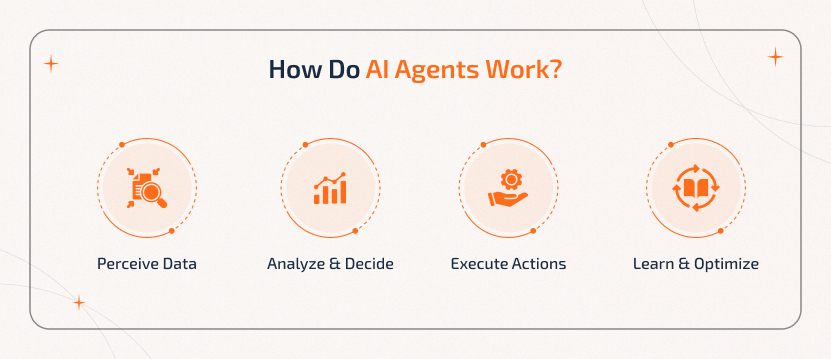
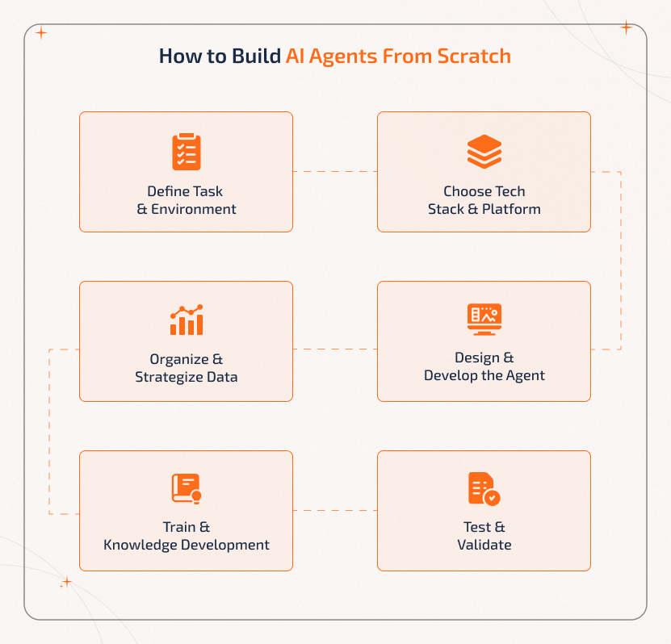

According to a Capegemini Research Institute’s report (July 2024), 82% of enterprises have plans to build an AI agent for business within the next three years. 32% of the companies already use AI agent applications, while 42% are exploring their benefits.
The stakes have never been so high. PwC reports that businesses that use AI agents that work autonomously, make decisions based on context, and don’t need constant people management are seeing productivity gains of 20% to 30%, faster speed to market, and increased revenue.
If you are an enterprise CTO, contemplating digital transformation, surely you have explored automation and LLMS. But here’s the fact: they are table stakes in this era. If you want to see a real difference in operational intelligence and cost, build your own AI agent for business. Because in the next couple of years, 15% of day-to-day work operations will be performed by these agents.
Let us add that AI agents are not rule-based bots or conversational assistants. They are smart, intelligent, emotionally present, and independent decision-makers that are extremely capable of executing tasks, learning from the results, and developing meaningful associations across enterprise systems.
In the meantime, AI agents for business operations extend beyond generic operations, which drives efficiency, reliability, and adaptability across complex workflows.
However, the window for competitive advantage through early adoption is rapidly closing. So, acting immediately will help you establish market leadership positions that become increasingly harder to challenge.
In this guide, we will explain the architecture, AI agent strategy, and elements needed to build a goal-driven and scalable business AI agent.
What are AI Agents?
AI agents are proactive computer programs, or “digital employees,” that perceive, reason, and act independently to achieve different goals. Unlike traditional automation tools that follow pre-set algorithms, AI agents adapt to their own and users’ behaviors based on conversations, questions, environmental changes, policies, data patterns, and changing business contexts.
AI agents do not follow if-then logic structures. They, in fact, combine natural language processing (NLP), predictive analytics, machine learning (ML) algorithms, and decision trees to manage multifaceted business operations, including managing customer interactions, coordinating with vendors, analyzing product inventory, processing financial data, and providing actionable insights. All of this in real time.
An AI agent for business possesses four unique capabilities that differentiate it from other solutions. Here they are:
1. Environmental Perception: This capability allows AI agents to read multiple data sources, systems, and external conditions every second in order to have a thorough situational awareness.
2. Autonomous Reasoning: Understanding and interpreting things independently helps agents to analyze complex scenarios and find the best action without any human involvement.
3. Goal-Oriented Behavior: With this ability, agents continually work toward preset goals while changing tactics based on changing circumstances.
4. Learning Skills: Agents can improve performance over time by analyzing results of different actions and also refine decisions.
How Do AI Agents Work: Technical Architecture Behind the Intelligence
AI agents’ mechanics work through a multi-stage cognitive cycle that mirrors human decision-making, but at rocket speed and scale. Their sophisticated architecture allows them to handle complex business and customer scenarios in a couple of minutes. This cycle allows AI agents for business development to rapidly transform raw inputs into actionable outcomes with minimal human intervention. Here’s how it works:

1. Data Perception and Gathering
An AI agent for business continuously gathers data from various places, such as customer interactions, databases, APIs, sensors, market feeds, and logs. It is designed to process structured data (ERP entries), unstructured data (emails, chats, voice memos, image uploads), visual data (CCTV footage), and live streams (IoT feeds). This gives the agent a 360-degree, real-time view of the environment it is working in.
2. Analysis and Decision Making
The agent’s core system analyzes data using a combination of ML, NLP, predictive modeling, and rule-based logic. It then identifies patterns, extracts insights, forecasts results, and checks compliance, and finally generates a list of action options (by rank) based on success probability and impact.
3. Action Execution
The AI agent then chooses the best option from the list and puts it into action, whether by sending texts, placing an order, scheduling a task, updating records, or running workflows. It can manage different and disconnected operations across departments while maintaining full context of the business objectives.
4. Learning and Optimization
After each performance, the agent measures the results, learns from the success or failure, and updates its knowledge base. This feedback loop helps it to improve, self-optimize, and adapt to changing needs, all without human assistance.
Modern AI agent applications can now integrate with enterprise tools, such as financial applications, ERP, CRM, RCM systems, communication platforms, and other services, reducing manual handoffs in cross-departmental coordination.
We create enterprise-ready AI agents that adapt, respond, & scale operations
Why Should You Build a Goal-Based AI Agent for Your Business in 2025?
The benefits of AI agents go beyond cutting down operational costs. Goal-based AI agents deliver measurable outcomes, not just answers to questions. Smart AI agents for business processes will unlock efficiency by automating repetitive tasks, enabling teams to focus on other higher-value tasks. They can create entirely new capabilities that fundamentally change how your business runs, competes, and scales.
Benefits of AI Agent Implementation in Business
- Improves Day-to-Day Operations: It automates tier-1 and tier-2 business processes, like cancelling orders, handling refunds, classifying customers, validating invoices, and solving problems.
- Executes Tasks 24X7: Unlike humans, AI agents don’t get tired. Therefore, it delivers exceptional performance round the clock. This makes them ideal for industries like healthcare, where downtime is not an option.
- Reduces Human Fatigue: One AI agent can perform thousands of tasks and customer interactions across different time zones. They also continue to work behind the scenes, beyond the usual office hours.
- Generates More Revenue On-the-Go: Agents can spot upsell opportunities, plug revenue leaks, predict demand, adjust strategies, suggest ideal pricing, and make sure no sales lead is missed – most of them in real-time.
- Personalized Sales Touch: They can customize actions and interactions based on customer history and preferences and detect and fix issues even before they affect the customer.
- Get Real-Time Actionable Insights: Through data analysis, AI agents can inform business leaders on various attributes, such as your growth areas, exact customer needs, gaps in processes, as well as forecast trends and track competitors.
AI Agent vs Bot: Differences You Must Know
You may wonder why build an AI agent for business when chatbots are cheaper. While both technologies automate business processes, they dramatically differ in fundamental approaches, core capabilities, and use cases.
Here’s a comparison between an AI agent vs bot:
| Feature | Chatbots | AI Agents |
|---|---|---|
| Cost | Cheaper (often $0–$10k) | More expensive ($10k–$100k+, depending on complexity) |
| Capabilities and Intelligence | They answer. They’re limited to scripted replies, LLM prompts, basic Q&A, predefined rules | They decide and act. They’re goal-driven, independent in decision-making, and perform multi-system coordination |
| Memory | Their memory is limited to a particular session | They can retain memory from previous tasks and conversations |
| Use Cases | FAQs, simple single-step support, and collecting leads | Complex tasks, like order processing, diagnosing diseases, detecting fraud, auditing books, and RPA |
| Integration | Capable of basic integration (Usually standalone or API-connected) | Performs deep integrations with ERP, CRM, RCM, and even custom systems |
| Learning & Problem Resolution | Static or minimal learning. Escalates complex issues to human | Continuous learning and self-improvement. Adapts to changing circumstances and solves problems on its own |
| Business Impact | Improves efficiency | Improves productivity, cuts down overhead and operational costs, and impact revenue |
When Should You Opt for an AI Agent for Business?
AI agents are readily adaptable to diverse use cases. So, choosing to build an AI agent for business or not will depend on your business needs and goals. Meanwhile, smart AI agents for business can be a scalable problem-solver that specifies when to add real value for your operation. Here are a few signs your business might need an AI agent:
1. Overwhelmed Customer Support Team: When ticket volumes are rising, you are unable to respond to a customer’s question within an hour, and customer complaints are frequent.
2. Business Processes Span the System: When processes, databases, systems, and tools are interconnected.
3. Insufficient Workflows and Repetitive Tasks: When employees spend too much time on manual, repetitive tasks that are not only time-consuming but also error-prone. Examples: Processing invoices, evaluating bank transactions for loans, or coding diagnoses.
4. Decisions Rely on Historical and Real-Time Data: When your business’ core operation depends on accurate data analysis and predictions. Examples: Fraud detection, medical claims and adjudication, or loan underwriting.
5. Difficulty in Scaling Manual Operations: When your business is growing rapidly but the current system cannot handle the high demand. Examples: inventory management, follow-ups, data cleaning, and ticket triaging.
6. 24/7 Proactive Monitoring is Required: When you provide services across different time zones or work on complex systems that need continuous and accurate monitoring. Examples: Error detection, diagnosing health complications, and auto-escalating based on SLAs.
How to Build AI Agents From Scratch
Now that you understand what AI agents can do and how they can fit into your business, it’s time to turn that knowledge into action. To do that, you need a certified AI agent development company, like Sparkout Tech Solutions, that follows proven, structured methodologies instead of trial-and-error approaches.
Choosing a partner ensures that your AI agent business model is designed for long-term scalability, reliability, and delivers measurable results.

Phase 1: Find Out the Task and Environment
Before you build anything, define what the ultimate goal will look like. This starts with:
Understanding the Business Case: Identify the inefficiencies in your current business processes. When you work with us, we will find out the areas where human effort is high, errors are common, or turnaround times are long. These are ideal opportunities for automation with AI agents.
Weighing the Benefits: Understand what you can save through the agent, be it time, money, or resources. Estimate both short-term and long-term ROI to justify the effort.
Buying-in from Stakeholders: Talk to team leaders, users, and customers. Conduct several rounds of interviews and consultations. Finally, align expectations and define clear outcomes everyone agrees on.
Prioritizing Use Cases: Not all use cases are equal. Start with high-value but low-risk ones. For instance, internal operations are often a safe starting point. We will help you create user stories to describe how the agent should act, respond, and handle exceptions.
Phase 2: Choosing the Right Technology and Platform
AI agents run on platforms called agentic frameworks. These help developers build, test, and deploy agents faster and more efficiently.
Some of the frameworks that Sparkout uses are:
LangChain: One of the most widely used frameworks for large language model (LLM) agents. It offers memory, tool usage, and full developer control; perfect for businesses that want to customize logic.
AutoGen: This Microsoft framework allows multi-agent collaboration. It is ideal for scenarios where distributed teams must work together.
CrewAI: Great for business workflows that require teams of agents to handle complex tasks.
Botpress: Suitable for enterprise-grade deployments, especially where compliance is key.
BabyAGI: A lightweight framework that focuses on autonomous task generation and prioritization. It is ideal for companies testing fast, iterative workflows.
Meta AI tools: FAIRSEQ and Llama-based ecosystems are powerful research-grade agents that can be adapted to develop enterprise-scale, highly customized AI agent ideas.
Next, you need to decide where to host your agent. Cloud platforms like AWS Sagemaker, Azure, or Google Vertex AI are quite scalable and give easy access to exceptional AI services. Our team will decide if you need on-premise or hybrid based on how your business handles sensitive data or whether it is in a regulated industry.
Consider how the AI agent will connect with internal tools, CRMs, databases, or APIs. You will have to plan for handling errors and retries, security and authentication, and monitoring and fallbacks.
Phase 3: Strategize Your Data, Fuel Your AI Agent
AI agents are only as good as the data they’re trained and operated on. Therefore, prioritize the following elements:
Data Inventory:
Audit all your current data sources, including structured data from business systems, unstructured data from documents/emails, and external data, such as customer feedback, product reviews, and social media posts. Keep adding real-time feeds if your agent needs to respond to changing inputs.
Data Quality:
Evaluate the data for accuracy, completeness, consistency, and freshness. If data is poor, your agent’s performance will drastically suffer. Clean and optimize your datasets whenever required before development begins.
Data Processing:
Build a pipeline to prepare this data. For instance, remove duplicates, fix errors, and convert formats as needed. For real-time agents, this process must be automated and always running at machine speed.
Privacy and Compliance:
If your agent touches sensitive information (personal, financial, and health-related), make sure of full compliance with laws like GDPR, HIPAA, and ISI. We use techniques like anonymization, differential privacy, or federated learning for additional protection.
Our experts help audit, clean, and activate high-quality data for secure, high-performing AI agents.
Phase 4: Designing and Developing the AI Agent
In this phase, you must focus on building the core intelligence and behavior patterns of the agent. Here’s how you can do it:
a) Define Your Agent Type
Based on your use case, decide what kind of agent you are building. It may be one of the following:
- Task agents: Single-purpose agents designed to execute specific actions like form filling, email summarization, etc.
- Conversational agents: Dialogue-based agents used in customer support or personal assistant use cases.
- Autonomous agents: More advanced agents like BabyAGI that repeat tasks, learn, and refine actions over time.
b) Create Interaction Flows
Now, build intuitive user journeys and conversation designs that match with expected agent functions. Consider the entry and exit points, core workflows, escalation paths (if the user needs human intervention), and context management across steps (memory).
We use tools like flowcharts, storyboards, or platforms like Voiceflow for creating the visual flow design.
c) Define Decision-Making Logic
Moving on, your development team will program your agent’s reasoning engine. This shall include rule-based logic (if-then), machine learning models, LLM prompts, and optimization strategies (e.g., path selection and fallback handling)
For more complex agents, you may have to implement a decision graph to handle branching and fallback logic clearly.
d) Integrate APIs and Tools
Now it’s time to empower your AI agent with tool usage capabilities. In order to do this, you need to integrate it with CRM or ERP systems, databases or vector stores, external APIs (e.g., weather, maps, payment gateways), and internal tools via SDKs or REST endpoints.
Make sure the AI agent development services provider carries out proper authentication, error handling, retries, and timeouts during integrations.
e) Build a Minimum Viable Agent (MVA)
Start small with a version that solves a narrow problem extremely well. Your MVA should focus on the following attributes:
- A single task or workflow
- It should be testable and measurable
- It should offer quick wins to build stakeholder confidence
Once the MVA is validated and accepted, expand the agent gradually to cover broader use cases.
f) Design Modular Codes
One of the crucial points to remember while developing the agent is writing clean, modular code so that logic, prompt templates, integrations, and fallback routines are easily upgradable or swappable. This step will support easier iteration, testing, and debugging as the agent matures with months of usage.
Phase 5: Training and Knowledge Development
Feed your newly formed AI agent examples of real-world scenarios it’ll encounter. This should include past chats, FAQs, knowledge bases, policy documents, compliance records, and other unique cases. The more representative the data, the better the agent’s performance.
Don’t forget edge cases or rare situations. You can add synthetic training data to cover them as well.
Once this is set, it’s time to train your agent using this data, checking its performance with metrics like accuracy, precision, and response time. Use cross-validation to avoid over- or underfitting.
Tune the AI agent by adjusting parameters or architecture frequently. You might also combine models (ensemble) for more reliable decisions.
And finally, build a central repository of static information, such as FAQs, how-tos, product descriptions and demos, case studies, etc. This will help the agent fetch accurate answers fast and adapt to changes without retraining.
Phase 6: Testing and Validation
You must test the AI agent rigorously before it goes live. At Sparkout, our AI development team performs the following tests to make sure your agent gives you a competitive edge the moment it is launched:
Functional Testing:
We check if the agent handles all the expected tasks correctly and provides appropriate and accurate responses, even when users give unexpected and unclear answers.
We use automated testing frameworks to run the tests repeatedly and consistently till we are satisfied with the outcomes.
Performance Testing:
The test helps simulate real-world load. It answers questions like what happens when 100 users ask questions at once? Does the agent slow down? What can AI agents do when customers turn angry and abusive?
We simultaneously monitor CPU performance, memory, and other resources to fix performance issues on the spot.
User Acceptance Testing:
Once the initial tests are done, let real users try it and give feedback. Does the agent meet their needs? Is it easy to use? What’s missing? Make sure you have answers to all the relevant questions and fix usability issues before the final rollout.
Build, Train, and Scale Your AI Agent for Business with Sparkout Tech Solutions
For a forward-thinking enterprise like you, building an AI agent for business is no longer a theoretical concept. It is imperative and strategic and gives a greater advantage over the competition. With this calculative investment, you gain a 24/7 operational layer that works across departments, systems, time zones, relationships, and customer touchpoints.
If you are ready to deploy goal-based, scalable, and intelligent agents across your enterprise, Sparkout Tech offers battle-tested AI agent development services. We have helped businesses across healthcare, government, supply chain, travel, and real estate assess, prototype, deploy, train, and monitor custom AI agents aligned with business outcomes.
As a trusted AI agent development company, our team bring deep expertise in multi-agent architectures, no-code deployments, LLM integrations, and security-first implementations.
To find out how to create your own Ai system, how much it costs, but how much more it can save, contact us for a free company evaluation.
We build secure, scalable AI agents that automate ops, cut costs & drive enterprise outcomes.